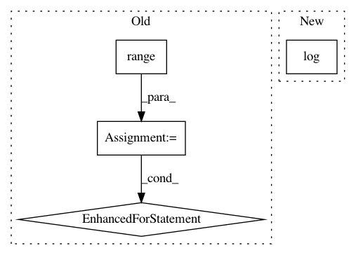

b0f34cdfd3ec8e41521cfd1b4a19c8dabb51fbbf,scipy/stats/_ksstats.py,,_kolmogn_p,#Any#Any#,498
Before Change
return 0.0
prd = 1.0
mlt = 2 * t - 1
for m in range(1, n):
prd = prd * m * mlt / n
prd = prd * 2 * n * n
return prd
if t >= n - 1:
// Ruben-Gambino
After Change
if n <= 140:
prd = np.prod(np.arange(1, n) * (1.0 / n) * (2 * t - 1))
else:
prd = np.exp(_log_nfactorial_div_n_pow_n(n) + (n-1) * np.log(2 * t - 1))
return prd * 2 * n**2
if t >= n - 1:
// Ruben-Gambino : 1-2(1-x)**n -> 2n*(1-x)**(n-1)
In pattern: SUPERPATTERN
Frequency: 3
Non-data size: 4
Instances
Project Name: scipy/scipy
Commit Name: b0f34cdfd3ec8e41521cfd1b4a19c8dabb51fbbf
Time: 2020-02-15
Author: pvanmulbregt@users.noreply.github.com
File Name: scipy/stats/_ksstats.py
Class Name:
Method Name: _kolmogn_p
Project Name: facebookresearch/Horizon
Commit Name: 4021cdc2b0280973776365d255b0dd8bff5513e8
Time: 2020-02-26
Author: czxttkl@fb.com
File Name: ml/rl/test/evaluation/test_evaluation_data_page.py
Class Name: FakeSeq2SlateTransformerNet
Method Name: forward
Project Name: facebookresearch/ParlAI
Commit Name: 06bb64cd6f06413528f5c634da7517350541adeb
Time: 2018-02-05
Author: kshuster@fb.com
File Name: examples/extract_image_feature.py
Class Name:
Method Name: main